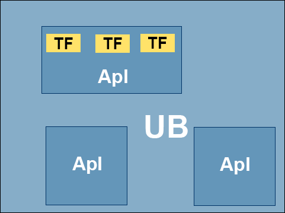

Da Tageslicht örtlich und zeitlich nicht immer in ausreichendem Maße vorhanden ist, ist zusätzlich eine künstliche Beleuchtung erforderlich. Die Arbeitsstätten müssen mit Einrichtungen für eine der Sicherheit und dem Gesundheitsschutz der Beschäftigten angemessenen künstlichen Beleuchtung ausgestattet sein. Eine Verringerung des individuellen Sehvermögens, z. B. mit zunehmendem Alter, kann eine höhere Anforderung an die Beleuchtungsqualität (z. B. eine höhere Beleuchtungsstärke und höhere Anforderungen an die Begrenzung der Blendung) erfordern.
(1) Beim Einrichten und Betreiben von Arbeitsstätten müssen die Mindestwerte der Beleuchtungsstärken des Anhanges 3 eingehalten werden.
Ergibt sich bei der Gefährdungsbeurteilung, dass in bestehenden Arbeitsstätten die Einhaltung der Mindestwerte der Beleuchtungsstärken nach Anhang 3 mit Aufwendungen verbunden ist, die offensichtlich unverhältnismäßig sind, so hat der Arbeitgeber die betroffenen Tätigkeiten, Arbeitsplätze, Arbeitsräume und Bereiche individuell zu beurteilen. Bei der Gefährdungsbeurteilung hat der Arbeitgeber zu prüfen, wie durch andere oder ergänzende Maßnahmen die Sicherheit und der Gesundheitsschutz der Beschäftigten in vergleichbarer Weise gesichert werden kann; die erforderlichen Maßnahmen hat er durchzuführen. Solche Maßnahmen sind z. B. der Einsatz von effizienteren Leuchtmitteln oder die Verkürzung von Wartungsintervallen der Beleuchtungseinrichtungen.
(2) Für Tätigkeiten, Arbeitsplätze, Arbeitsräume und Bereiche, die im Anhang 3 nicht aufgelistet sind, sind die erforderlichen Werte im Rahmen der Gefährdungsbeurteilung zu ermitteln.
(3) An keiner Stelle im Bereich des Arbeitsplatzes darf das 0,6-fache der mittleren Beleuchtungsstärke unterschritten werden. Der niedrigste Wert darf nicht im Bereich der Hauptsehaufgabe liegen.
(4) Die Beleuchtung kann als raumbezogene Beleuchtung oder auf den Bereich des Arbeitsplatzes bezogene Beleuchtung ausgeführt werden. Die im Anhang 3 angegebenen Mindestwerte der Beleuchtungsstärke müssen erreicht werden.
Die Anwendung einer raumbezogenen Beleuchtung kann gegeben sein, wenn:
Bei den genannten Anwendungsfällen für die raumbezogene Beleuchtung ist es möglich in der Grundausstattung den gesamten Raum mit dem Mindestwert der Beleuchtungsstärke für den Umgebungsbereich entsprechend der späteren Nutzung zu beleuchten. In diesen Fällen ist durch zusätzliche Beleuchtung, z. B. mobile Beleuchtungssysteme, die Mindestbeleuchtungsstärke für den Bereich des Arbeitsplatzes sicherzustellen.
Die Anwendung einer auf den Bereich des Arbeitsplatzes bezogenen Beleuchtung kann gegeben sein, wenn:
(5) Im Umgebungsbereich eines Arbeitsplatzes mit einer Beleuchtungsstärke von 300 lx muss die mittlere Beleuchtungsstärke mindestens 200 lx betragen. Bei Arbeitsplätzen, die mit 500 lx oder mehr zu beleuchten sind, muss die mittlere Beleuchtungsstärke im Umgebungsbereich mindestens 300 lx betragen. Beleuchtungsstärken über 500 lx im Bereich des Arbeitsplatzes können eine höhere mittlere Beleuchtungsstärke im Umgebungsbereich erfordern. Die minimale Beleuchtungsstärke im Umgebungsbereich darf das 0,5-Fache der mittleren Beleuchtungsstärke des Umgebungsbereichs nicht unterschreiten.
(6) Bei Mindestwerten der Beleuchtungsstärke über 500 lx nach Anhang 3 ist es zulässig, diese nicht am gesamten Arbeitsplatz, sondern nur auf den für die Sehaufgabe relevanten Teilflächen zu erreichen (siehe Abbildung 3). Dies kann zum Beispiel durch zusätzliche Arbeitsplatzleuchten geschehen. Die mittlere Beleuchtungsstärke im Bereich des Arbeitsplatzes darf bei teilflächenbezogener Beleuchtung 500 lx nicht unterschreiten. An keiner Stelle im Bereich des Arbeitsplatzes darf ein Einzelwert der Beleuchtungsstärke 300 lx unterschreiten.
Die Anwendung einer teilflächenbezogenen Beleuchtung kann gegeben sein, wenn:

Abb. 3: Prinzipskizze zur Aufteilung einer Arbeitsstätte in zu beleuchtende Bereiche (Apl = Bereich des Arbeitsplatzes, TF = Teilfläche, UB = Umgebungsbereich)
(7) Die mittlere vertikale Beleuchtungsstärke muss der Seh- und Arbeitsaufgabe angemessen sein. Sie muss den im Anhang 3 angegebenen Werten entsprechen, soweit hierauf in der Spalte "Bemerkungen" verwiesen wird. Bei hellen Raumflächen und breit strahlenden Leuchten ist bei Einhalten der horizontalen Beleuchtungsstärken nach Anhang 3 in der Regel eine ausreichende vertikale Beleuchtungsstärke gegeben. Bewährt hat sich für Büroarbeitsplätze, Arbeitsplätze im Gesundheitsdienst und vergleichbare Arbeitsplätze (siehe Anhang 3, Spalte "Bemerkungen") ein Verhältnis von vertikaler Beleuchtungsstärke zu horizontaler Beleuchtungsstärke von ≥ 1:3.
(1) Störende Blendung oder Reflexionen sind zu minimieren. Blendung, die zu Unfällen führen kann, muss vermieden werden.
(2) Geeignete Maßnahmen zur Vermeidung und Begrenzung der Blendung sind z. B.:
(1) Es müssen Lampen mit mindestens einem Farbwiedergabeindex nach Anhang 3 verwendet werden. Durch die Leuchte darf dieser Farbwiedergabeindex nicht unterschritten werden. Für Tätigkeiten, Arbeitsplätze, Arbeitsräume und Bereiche, die im Anhang 3 nicht aufgelistet sind, sind die erforderlichen Werte im Rahmen der Gefährdungsbeurteilung zu ermitteln.
(2) Durch Auswahl der Lampen und Leuchten ist sicherzustellen, dass Sicherheitszeichen und Sicherheitsfarben als solche erkennbar sind sowie die Signalwirkung von selbstleuchtenden Sicherheitszeichen nicht beeinträchtigt wird. Werden Lampen mit einem Farbwiedergabeindex Ra < 40 verwendet, muss durch geeignete Maßnahmen sichergestellt werden, dass Sicherheitsfarben erkennbar bleiben (z. B. durch Hinterleuchtung oder Anstrahlung).
Flimmern oder Pulsation dürfen nicht zu Unfallgefahren (z. B. durch stroboskopischen Effekt) oder Ermüdung führen. Dies kann z. B. durch den Einsatz von elektronischen Vorschaltgeräten oder durch Drei-Phasen-Schaltung verhindert werden.
Schatten ermöglicht die räumliche Wahrnehmung. Durch angemessene Schattigkeit können Gegenstände in ihrer Form und Oberflächenstruktur leichter erkannt werden. Schatten, die Gefahrenquellen überdecken, dürfen nicht zu Unfallgefahren führen. Sie können z. B. durch Anordnung mehrerer Leuchten, die aus verschiedenen Richtungen Licht abgeben, minimiert werden.